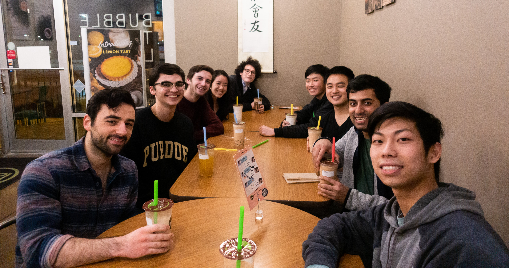

Smash Bros. at Purdue
One of my hobbies is competing in Super Smash Bros. Melee, a fighting game that released way back in 2001. Despite its age, it's still popular today thanks to a community of passionate gamers. At Purdue University, we have one of the strongest college Melee scenes in the country with 30-40 active players.
I know it sounds crazy, but this game has assuredly improved my life in multiple aspects. Melee gave me an outlet for my competitive nature and a way to challenge myself to learn and improve. It's a great way to escape the stress of academics, and I've made many lifelong friends over the years.
A couple weeks ago, Purdue hosted a large regional tournament called 'BOPME' or 'Best of Purdue Melee Enthusiasts'. For its 19th iteration, I helped organize the tournament by seeding attendees and assisting with day-of logistics. Seeding is the process of ranking players in the bracket so that the pairings are fair. Proper seeding ensures players of higher skill level do not play against each other until later rounds of the bracket. It also minimizes the probability that players in the same region will have to play each other.
The traditional method of seeding is usually a trial-and-error approach where the tournament organizer would test out various combinations until one is deemed 'good enough'. I knew there was a better way, so I made a Google Sheet that automates most of the process. You can find it in my projects. The tournament ran very smoothly and attendees were satisified with the seeding. I'm happy that future tournaments can reuse this tool to save time and energy that could be spent on other aspects of the tournament.
The tournament ran on time, there were many high-quality matches, and the attendees were satisfied. It was my first time helping run a larger tournament in this capacity - it felt good to give back to the community that has given me so much.
